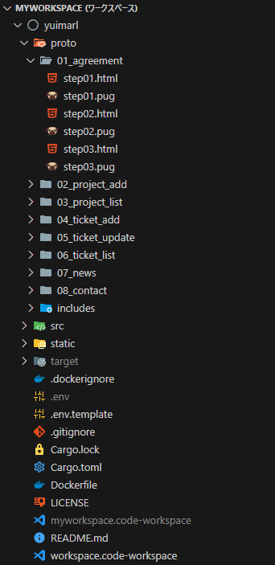
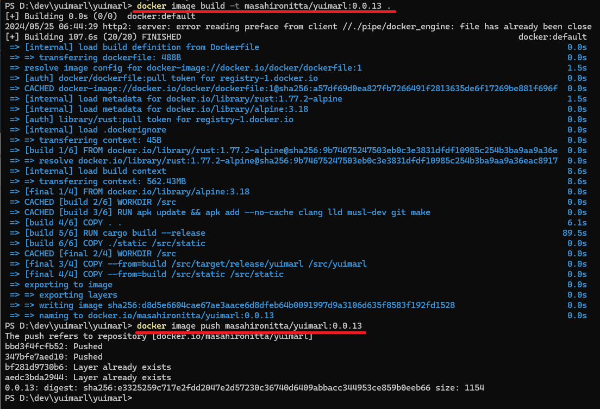

開発情報
開発の手順
Yuimarlの開発は、以下の手順で行います。
- 仕様書を作成する
- 画面を設計する
- コントローラーとコンポーネントのコードを作る
- モデルのコードを作る
- Rustのコードを完成させる
- Dockerイメージを作る
- 開発環境にデプロイしてテストする
- 本番環境にリリースする
仕様書を作成する
システムの仕様を決めて仕様書を作成します。
Yuimarlの仕様画面を設計する
画面を設計して、プロトタイプを作成します。
プロトタイプは、proto フォルダにあります。

{kind=link}
Yuimarl では Bootstrap が使われているので、Bootstrap についての知識が必要です。（参考書籍: 『Bootstrap 5 フロントエンド開発の教科書』 ）
プロトタイプは、画面操作のシナリオを作成し、各画目の pug を作成し、pug をコンパイルして html を生成します。
生成された html をブラウザで表示して確認し、必要に応じて修正します。
たとえば、プロジェクト作成のシナリオのプロトタイプは、「proto/02_project_add/」にあります。
proto/02_project_add のフォルダにある pug をコンパイルするには、次のコマンドを実行します。
pug -P proto/02_project_addコントローラーとコンポーネントのコードを作る
プロトタイプの固定 html を表示する Rust のコードを実装します。
モデルのコードを作る
Firestore に保存するデータの定義を作成し、モデルのコードを実装します。
Rustのコードを完成させる
Dockerイメージを作る
ルートフォルダにある Dockerfile をもとに Docker イメージをビルドするには、次のコマンドを実行します。
docker image build -t イメージ名:タグ名 .ビルドした Docker イメージを Docker Hub に登録するには、次のコマンドを実行します。（あらかじめ docker login しておく必要があります）
docker image push イメージ名:タグ名
{kind=link}
開発環境にデプロイしてテストする
運用環境構築 の手順で、開発環境用の Cloud Run にデプロイしてテストを行います。
本番環境にリリースする
運用環境構築 の手順で、本番環境用の Cloud Run にデプロイして動作確認を行います。